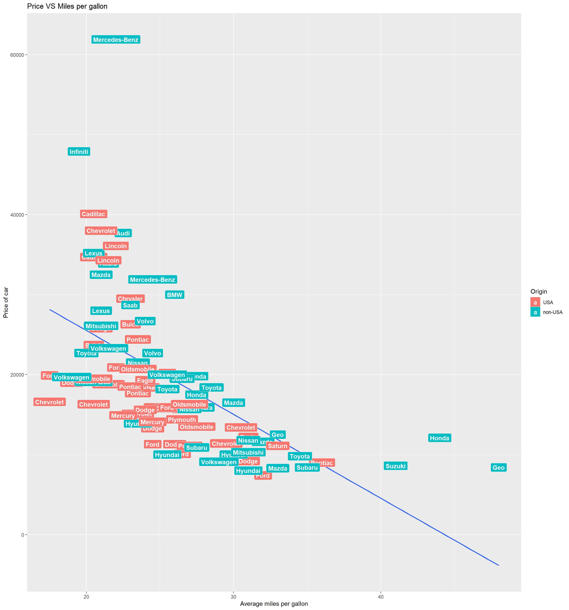
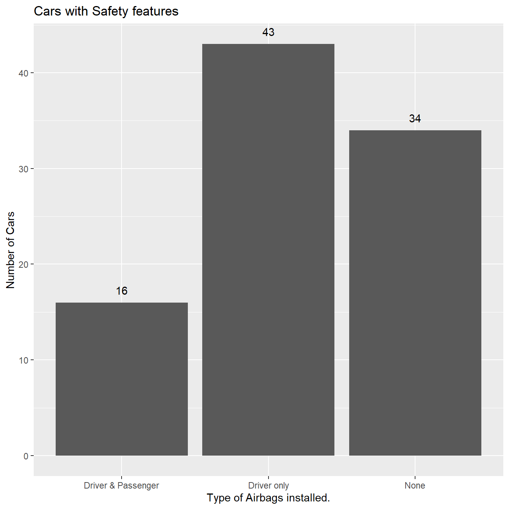

library(MASS)
library(dplyr)##
## Attaching package: 'dplyr'## The following object is masked from 'package:MASS':
##
## select## The following objects are masked from 'package:stats':
##
## filter, lag## The following objects are masked from 'package:base':
##
## intersect, setdiff, setequal, unionlibrary(tidyr)
library(ggplot2)
library(knitr)
opts_chunk$set(tidy.opts=list(width.cutoff=60),tidy=TRUE)Cars93 dataset from the MASS package. I Wrote down two interesting questions that you could answer with Cars93 dataset.In order to answer this question we will have to perform some data wrangling. My idea is to take the two MPG variables(MPG.city & MPG.highway) add them and divide by two to get the average MPG for each car.I will save the newly created variable to a new data frame called avgmpg.
avgmpg <- Cars93%>%
mutate(MPG.average = (MPG.city+MPG.highway)/2)Now I will try to verify if there is a correlation between the price and the average miles per gallon.
avgmpg%>%
ggplot(aes(MPG.average, Price*1000))+
geom_point()+
#color = Manufacturer, size = Price))+
#"I had built the graph in this style initially
#but the results did not actually inform me of anything."
geom_smooth(method = lm, se = FALSE)+
#geom_text(aes(label = Manufacturer), check_overlap = TRUE)+
geom_label(aes(label = Manufacturer, fill = Origin),
colour = "white", fontface = "bold",)+
labs(title = "Price VS Miles per gallon",
x = "Average miles per gallon", y = "Price of car")
To my surprise, after creating the plot we see a negative correlation between the Average miles per gallon and the price of the car. It seems like most of the expensive cars that are made in USA have very poor mileage compared to the non-USA brands. ##### (b) Question 2: How safe are the cars in the data set?
Cars93%>%
ggplot(aes(AirBags))+
geom_bar()+
geom_text(stat='count',
aes(label=..count..),
vjust=-1)+
labs(title = "Cars with Safety features",
y = "Number of Cars",
x = "Type of Airbags installed.")
After the review of the Air bags in the Cars from 1993 we can see that almost 36.6% of cars did not even have any safety features. Which is not true for this day due to the safety standards that every vehicle must adhere to.